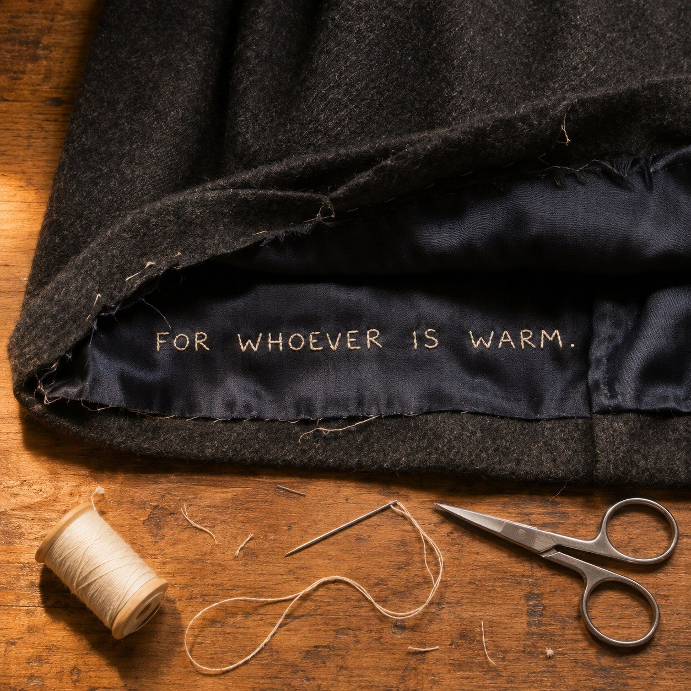
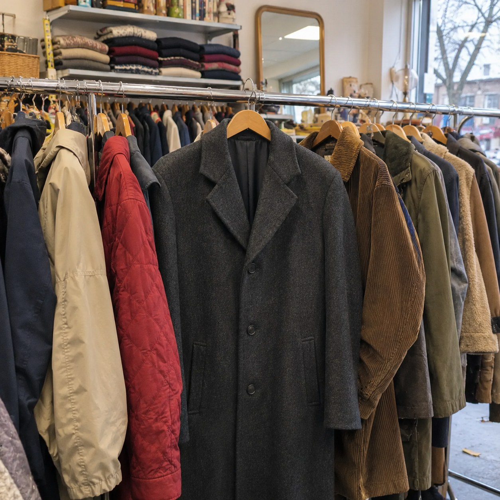

Whoever Is Warm


Inside this coat, between the wool and the lining, four words are sewn in pale thread: FOR WHOEVER IS WARM. Then the seam was closed, and the coat went to hang on a charity shop rail with the others.
No one will read them. To see the words you would have to unpick the hem, and nobody takes apart a coat that keeps them warm. So the sentence has only one way to reach the person it is for. It cannot be read. It can only be worn.
Most writing waits for a reader and is nothing until it finds one. This sentence does not need to be found. It comes true the moment someone puts their arms in the sleeves, at a bus stop, in a doorway, on the walk home. It names them without knowing them, and it is right about them every time.
Marcel Duchamp once made a ball of twine pressed between two brass plates, and his friend Walter Arensberg hid something inside it that Duchamp never learned. The maker was the one kept out. Here it is the other way round. The maker knows exactly what is inside, and the owner never will. One of them has the words. The other has the warmth.
The coat is on the rail now, between a raincoat and a quilted jacket. Someone will try it on, turn once in the mirror by the till, and decide.